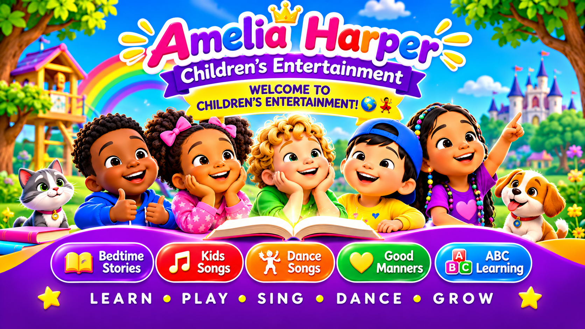
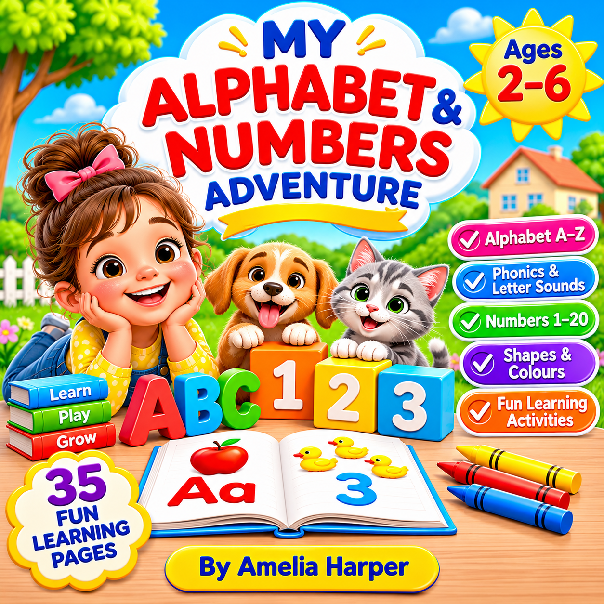
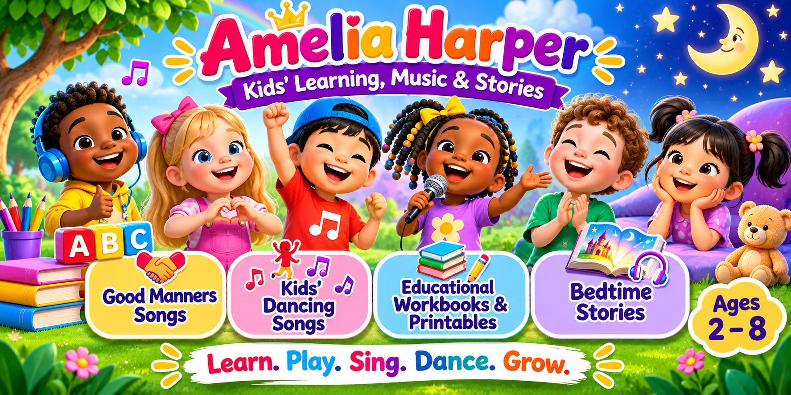

Kindness & friendship
Sharing, helping, taking turns and caring for others.
Discover joyful games, magical audio stories, songs that teach kindness and playful ways to learn — all in one colourful place.

Pick an age group and discover a new challenge.
Explore a 500-question alphabet challenge bank for early literacy. More advanced content for older learners is being developed.
Play the ABC challenge →Turn over picture cards, find matching pairs and choose a challenge from 3 to 10 pairs for ages 2–12.
Play the memory game →
Settle into a cosy listening moment with original stories full of wonder, friendship, imagination and gentle lessons.
A parent or caregiver should guide listening and keep the usual bedtime routine.
Catchy, child-friendly songs that celebrate kindness and everyday good habits.
Sharing, helping, taking turns and caring for others.
Polite words, gratitude and showing appreciation.
Listening, telling the truth and treating people well.
Brushing teeth, tidying up and getting ready for bed.
New songs will be added by the Amelia Harper team.
Printable activities for curious little learners.

A colourful activity workbook for early alphabet and number discovery.
Explore the workbook →Follow along for new games, bedtime stories, songs, activities and family-friendly updates.
